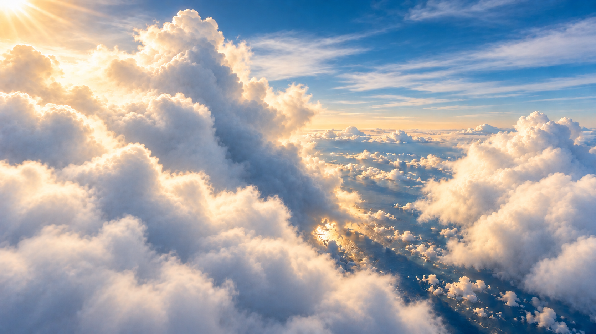
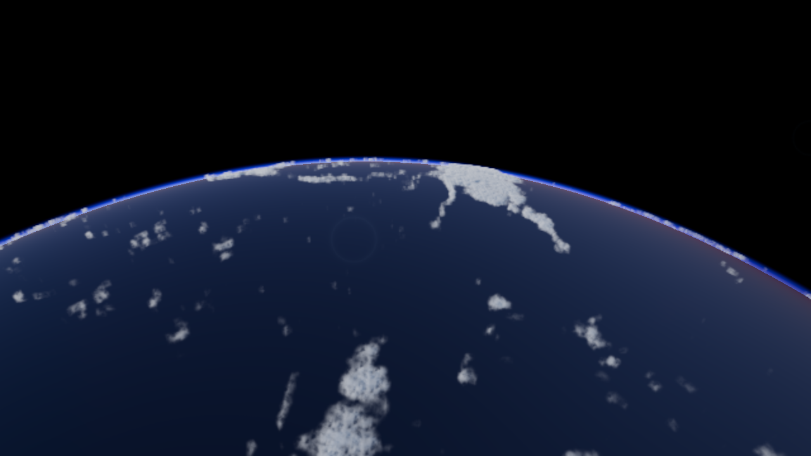
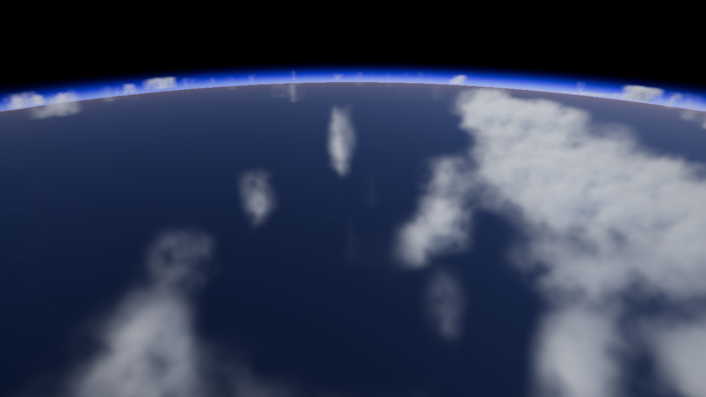
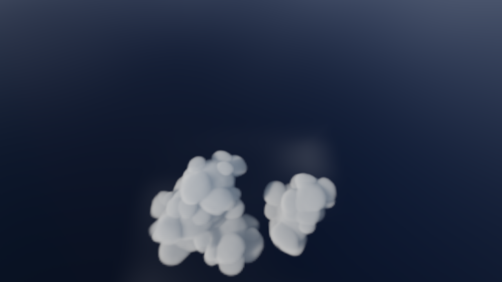
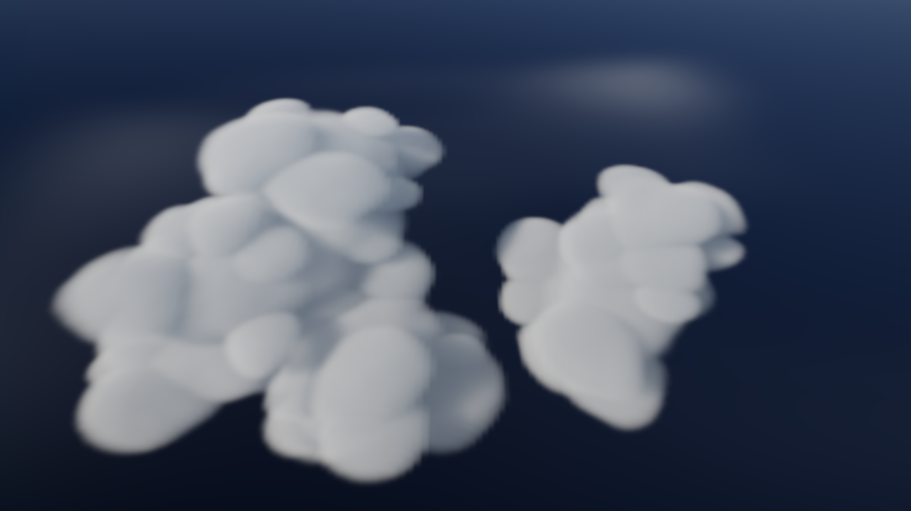
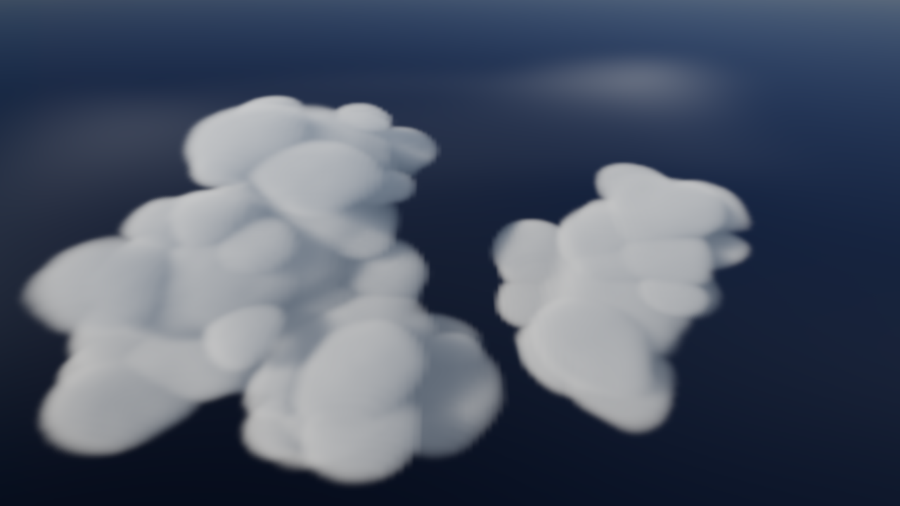
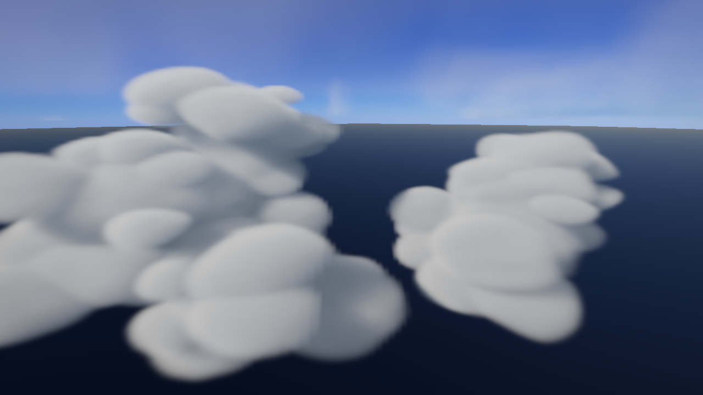
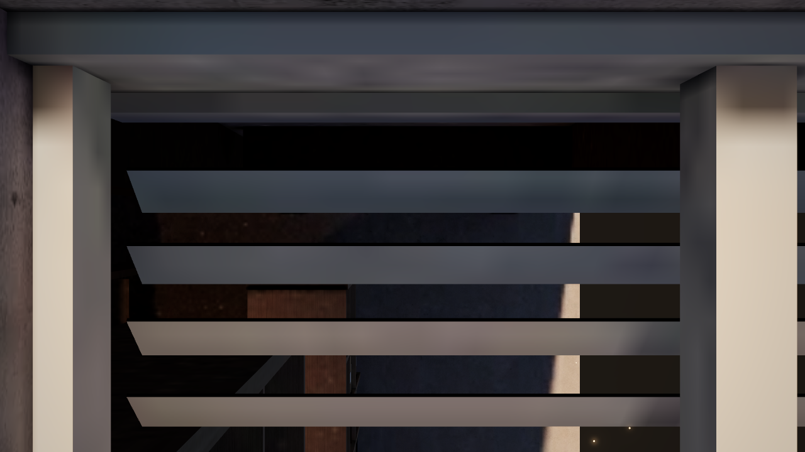
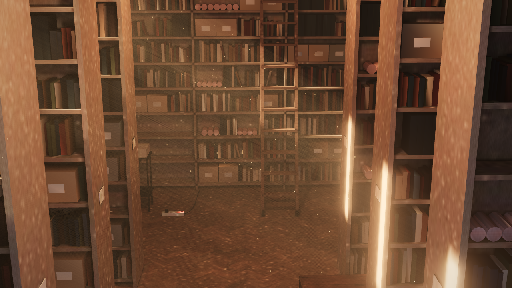

A 구름 실제 제작 후보
목업 수준의 시각 퀄리티에는 미달합니다. 큰 둥근 덩어리와 매끈한 경계, 주변 구름 밀도·역광 부족이 남았습니다. 아래는 실제 WebGL 캡처이며 목업이 아닙니다. 기술 동작과 시각 품질을 구분합니다. 사용자 제작 피드백은 0/2회입니다.
실제 스크롤 프리뷰 · 검증 결과 · 소스·에셋·캡처 기록
비교 기준 · J5v7 목업

orbit · p=0.23

frame-260 · p=0.26

frame-283 · p=0.283

near-295 · p=0.295

frame-300 · p=0.3

frame-308 · p=0.308

frame-320 · p=0.32

entry · p=0.42

archive · p=0.55

실패 시 대안 계획
실제 제작 피드백 1차 → 수정 → 2차. 두 차례 후 실패 판정이면 구름 없는 도입부와 AI 생성 영상 구름 도입부를 모두 제작해 같은 구간에서 질감·빛·동작·서고 접합·정지/역스크롤·성능을 비교하고 높은 퀄리티로 변경합니다. 현재 대안 제작 조건은 미성립입니다.